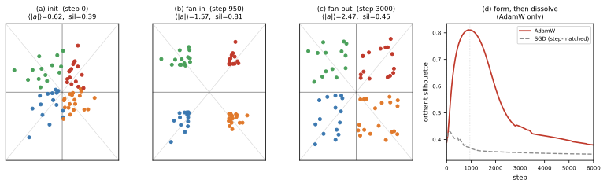

A mechanism note, companion to The axon–dendrite wiring prior
(nr.axdn-euc-abs) on
flat_modular
§3. On flat_modular the axon positions of
nr.axdn-euc-abs do something striking and entirely
optimizer-driven (Fig. 1). Early in training they fan
in: a diffuse cloud packs into exactly \(2^d\) tight clusters sitting on the
sign-orthant corners of position space (four, at the default
\(d{=}2\)). Then they fan
out: the clusters melt back into a diffuse spread — yet no axon
ever leaves its orthant. One regularizer term drives both acts, and the
data drives neither.
The data is absent for a structural reason: positions get no gradient from the loss, \(\partial\,\mathrm{MSE}/\partial(a,D)\equiv0\) — predictions are \(f_W(x)\), and positions only price \(W\). Given the weights, the geometry is a closed system of (regularizer force field) \(\times\) (optimizer). Below we derive both acts from the one load-bearing term, the anti-collapse density prior, and check each step against the run ( and, under ). The whole story is one sentence: a short-range repulsion, rounded onto the coordinate axes by AdamW, builds corners while the cloud is small and dissolves them once it is large.
One force: a short-range radial repulsion
Of the three penalty terms only the density prior is load-bearing (report §3–4); on the hidden boundaries it is a Gaussian repulsion on the \(N\) axons, \[ \mathcal{R}_{\mathrm{dens}}=\frac{1}{N(N-1)}\sum_{i\ne j} k_{ij},\qquad k_{ij}=\exp\!\big(-\lVert a_i-a_j \rVert^2/2\sigma^2\big),\qquad \sigma=1. \tag{1}\] Its gradient is \(\partial\mathcal{R}_{\mathrm{dens}}/\partial a_i=-\tfrac{2}{N(N-1)\sigma^2}\sum_{j\ne i} k_{ij}(a_i-a_j)\) (the \(j{=}i\) term vanishes). Name the positive constant \(\beta\,{=}\,2c\lambda_d/N(N-1)\sigma^2\), the total kernel weight \(\kappa_i\,{=}\,\sum_{j\ne i}k_{ij}\), and the kernel-weighted neighbor mean \(\bar a_i\,{=}\,\sum_{j\ne i}k_{ij}a_j/\kappa_i\). Since the loss exerts no force (\(\partial\,\mathrm{MSE}/\partial a\equiv0\), so only \(c\lambda_d\nabla\mathcal{R}_{\mathrm{dens}}\) acts), the force on \(a_i\) is the negative scaled gradient; folding in \(\beta\) and distributing \(a_i-a_j\), \[ F_i = -c\lambda_d\frac{\partial \mathcal{R}_{\mathrm{dens}}}{\partial a_i} =\beta\sum_{j\ne i} k_{ij}(a_i-a_j) =\beta\Big[\Big(\textstyle\sum_{j\ne i} k_{ij}\Big)a_i-\sum_{j\ne i} k_{ij}a_j\Big] =\beta\,\kappa_i\,(a_i-\bar a_i). \tag{2}\] Two properties of \(F_i\) drive everything below. (i) It is short-range: \(k_{ij}\) is negligible once \(\lVert a_i-a_j \rVert\gtrsim\sigma\), so an axon feels only neighbors within a kernel width. (ii) While the cloud is small and centered, every \(\bar a_i\approx0\) (the iid symmetric init centers it), so \[ \boxed{\,F_i\approx\rho_i\,a_i,\quad\rho_i=\beta\kappa_i>0\,} \tag{3}\] — a radially outward push, a positive multiple of \(a_i\) (measured \(\cos(F_i,a_i)=0.99\)).
Fan-in: AdamW rounds the outward push onto the \(2^d\) corners
The force direction is the same for any optimizer; AdamW’s role is to strip its per-coordinate magnitude. The update is \(\Delta a_{i,k}=-\eta\,\hat m_{i,k}/(\sqrt{\hat v_{i,k}}+\varepsilon)\), with \(\hat m,\hat v\) the bias-corrected EMAs of \(g_{i,k}\) and \(g_{i,k}^2\). Here \(g_{i,k}=-\rho_i a_{i,k}\) holds a steady sign and a slowly drifting magnitude, so both EMAs settle (\(\hat m\!\to\!g\), \(\hat v\!\to\!g^2\)) and the ratio keeps only the sign: \[ \frac{\hat m_{i,k}}{\sqrt{\hat v_{i,k}}+\varepsilon}\longrightarrow \frac{g_{i,k}}{\sqrt{g_{i,k}^2}}=\operatorname{sgn}(g_{i,k}) \qquad\Longrightarrow\qquad \Delta a_{i,k}\approx-\eta\,\operatorname{sgn}(g_{i,k})=\eta\,\operatorname{sgn}(a_{i,k}). \tag{4}\] Every coordinate moves at the same speed \(\eta\) in its own sign direction: the outward push is rounded onto the diagonal of the axon’s orthant (measured \(|\Delta a|/\eta=1.03\), and \(\mathrm{corr}(\text{step},|g|)=0.18\) for AdamW vs. \(1.00\) for SGD, though \(|g|\) ranges \(\times32\)). With orthant label \(s_i=\operatorname{sgn}(a_i)\in\{\pm1\}^d\) the step \(\Delta a_i\approx\eta\,s_i\) is constant, so \[ a_i(t)\approx a_i(0)+\eta\,t\,s_i \quad\Longrightarrow\quad \frac{a_i(t)}{\lVert a_i(t) \rVert}\to\frac{s_i}{\sqrt d}\quad(\eta t\gg\lVert a_i(0) \rVert\sim\sigma): \tag{5}\] the init washes out and every axon drifts onto its orthant corner \(s_i/\sqrt d\). Axons sharing \(s_i\) land on the same corner, so the cloud sorts into \(2^d\) clusters (Fig. 1b; peak silhouette \(0.81\), ARI \(1.0\)). Step-matched SGD (the same force, \(\eta\) rescaled to match AdamW’s mean step) keeps the magnitude, so each axon slides straight out along its own ray and the cloud merely inflates — no corners (Fig. 1d; peak silhouette \(0.43\)).
Signs lock; the count is balls-in-bins.
The outward step is sign-preserving, so no coordinate recrosses \(0\): all signs reach their final value by step \(63\) and orthant identity is thereafter permanent (ARI \(\approx1\) even after the clusters blur). Each \(s_i\) is uniform on \(\{\pm1\}^d\) (independent fair signs) — \(N\) balls in \(2^d\) bins, one cluster per occupied bin — and a bin is empty with probability \((1-2^{-d})^N\), so \[ \mathbb{E}[\#\text{clusters}]=2^d\big(1-(1-2^{-d})^N\big),\qquad N=64. \tag{6}\] For \(2^d\ll N\) this \(\to2^d\) (all corners fill); for \(2^d\gg N\) it \(\to N\) (one axon per corner). Measured vs. predicted: \(29\) vs. \(27.8\) at \(d{=}5\), \(46\) vs. \(40.6\) at \(d{=}6\). At \(d{=}2\) the count is \(4\): its match to the four task modules is coincidence (cluster-vs-module ARI \(\approx0\)).
Fan-out: the same force goes local and melts the packing
Force (2) never changes form; what changes is which neighbors are in range. Split the mean by orthant (\(j\sim i\): same orthant as \(i\)), \(\bar a_i=\kappa_i^{-1}\big(\sum_{j\sim i}k_{ij}a_j+\sum_{j\not\sim i}k_{ij}a_j\big)\). During fan-in all pairs are within \(\sigma\), so \(\bar a_i\approx0\) and \(F_i\) is radial (3). But once the corners reach radius \(R=\lVert a_i \rVert\gg\sigma\) the two groups separate by scale: same-orthant pairs stay \(O(\sigma)\) apart (\(k_{ij}=O(1)\)) while cross-orthant pairs are \(\Theta(R)\) apart (\(k_{ij}\sim e^{-R^2/2\sigma^2}\to0\)). The cross terms vanish and the mean collapses onto the axon’s own corner: \[ \bar a_i\to\bar a_i^{\mathrm{in}}=\frac{\sum_{j\sim i}k_{ij}a_j}{\sum_{j\sim i}k_{ij}}\approx a_i \quad\Longrightarrow\quad F_i\approx\beta\,\kappa_i^{\mathrm{in}}(a_i-\bar a_i^{\mathrm{in}})=\beta\,\kappa_i^{\mathrm{in}}\,\delta_i, \tag{7}\] where \(\delta_i=a_i-\bar a_i^{\mathrm{in}}\) is the small, non-radial offset of \(a_i\) from its corner’s centre (\(\lVert \delta_i \rVert\sim\) within-corner spread \(\ll R\)). The radial drive has switched off (its source, the centered cloud, is now out of range); what remains is a local repulsion among same-orthant axons. AdamW still sign-steps, but along the per-axon direction \(\operatorname{sgn}(\delta_i)\) instead of the shared \(s_i\) — so corner-mates push apart, the corner fans open, and silhouette falls (Fig. 1c). Sign identity survives because \(\lVert \delta_i \rVert\ll R\) cannot carry a coordinate back through \(0\). The density-only replay confirms both acts (silhouette \(0.39\!\to\!0.81\!\to\!0.38\)), whereas a wire-only run forms and sharpens to \(1.0\) and never dissolves: the packing is created by density\(\times\)AdamW and undone by density alone.

Takeaway
The geometry is the fixed point of (density force) \(\times\) (AdamW): axis-aligned because AdamW’s step is axis-aligned, \(2^d\) in number because the force is radially symmetric, and transient because a short-range repulsion that builds corners must, once the cloud outgrows \(\sigma\), also tear them open. The data never enters (\(\partial\,\mathrm{MSE}/\partial a\equiv0\)). A representation that sits off the gradient path is shaped by optimizer geometry, not the task; to express the task it must enter the forward pass (. NeuroPos, where \(w_{ij}=1/\lVert p_i-p_j \rVert\) is the weight). The same equations govern Separator’s codes — there the corners are vertices of \(\{0,1\}^K\) and sigmoid saturation freezes the gradient, so the packing is persistent (report §5).